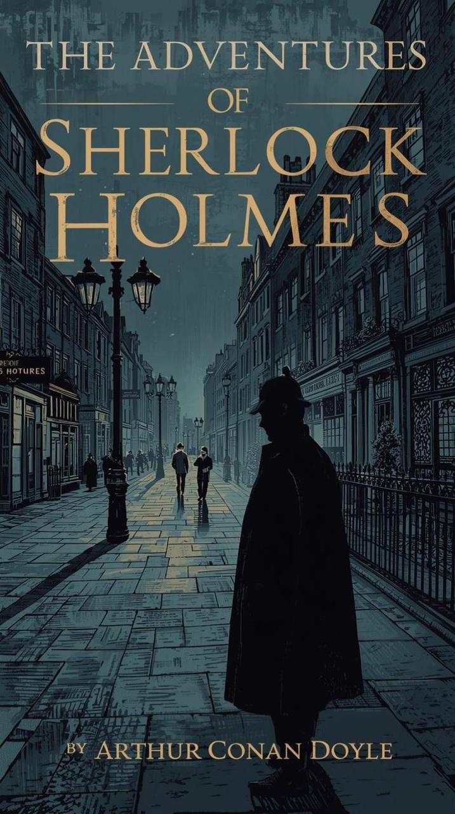
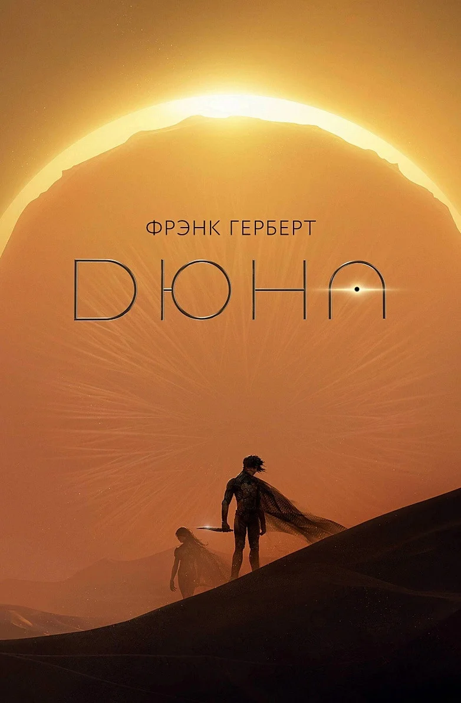

📅 18 мамыр, 2025
4
кітап оқылды
▲ 2 өткен күнге қарағанда3 сағ 12 мин
оқу уақыты
▲ 48 мин1 250
сөз оқылды
▲ 340 сөз86%
оқу белсенділігі
Жанрлар бойынша үлес
Оқу динамикасы
Оқылған кітаптар
Барлығын көру →Гарри Поттер және философ тасы
Дж. К. Роулинг
Фантастика Аяқталды: 17.05.2025
Шерлок Холмс
Артур Конан Дойл
Детектив Аяқталды: 14.05.2025
Бойжеткен және жігіт
Джоджо Мойес
Романтика Аяқталды: 09.05.2025
Дюна
Фрэнк Герберт
Фантастика Аяқталды: 05.05.2025Менің сипаттамам ✨

Сіз көбіне фантастика мен детектив жанрын оқисыз. Оқиғаларды талдауға және күрделі шешімдер қабылдауға бейімсіз.
✎ Кітапқа пікір қалдыру

Шерлок Холмс: Баскервиль иті
Артур Конан Дойл
★
★
★
★
☆